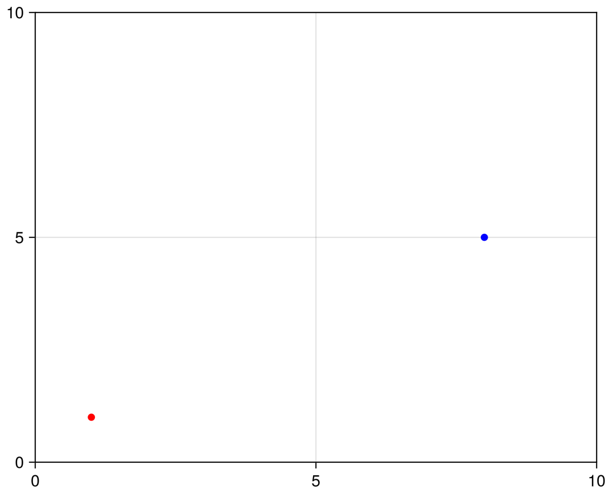

Example: Discrete control space environment
RxEnvironments can handle discrete state- and control spaces. In this example, we will create a simple discrete control space environment: The windy gridworld. The agent is placed on a grid and can move up, down, left, or right. However, there is a crosswind that pushes the agent up on the grid. The goal is to reach the goal state. First, we create the environment and the agent type. The agent type is mutable, as the agent's position will change over time.
using RxEnvironments
struct WindyGridWorld{N}
wind::NTuple{N, Int}
agents::Vector
goal::Tuple{Int, Int}
end
mutable struct WindyGridWorldAgent
position::Tuple{Int, Int}
endNext, we implement the RxEnvironments specific functions. In this environment, the environment state can only change when it is prompted with an action by an agent, so we do not need to implement anything for the update! function. For the receive! function, which changes the internal state of the environment (the position of the agent) we check if the action is valid and update the agent's position accordingly. The what_to_send function is triggered when the environment wants to send an observation to the agent, and we will send the agent's position.
RxEnvironments.update!(env::WindyGridWorld, dt) = nothing # The environment has no "internal" updating process over time
function RxEnvironments.receive!(env::WindyGridWorld{N}, agent::WindyGridWorldAgent, action::Tuple{Int, Int}) where {N}
@show action
if action[1] != 0
@assert action[2] == 0 "Only one of the two actions can be non-zero"
elseif action[2] != 0
@assert action[1] == 0 "Only one of the two actions can be non-zero"
end
new_position = (agent.position[1] + action[1], agent.position[2] + action[2] + env.wind[agent.position[1]])
if all(elem -> 0 < elem < N, new_position)
agent.position = new_position
else
@info "Agent moved outside the grid; position is not updated."
end
end
function RxEnvironments.what_to_send(env::WindyGridWorld, agent::WindyGridWorldAgent)
return agent.position
endIn order to prepare the visualization of the environment, we implement the RxEnvironments specific functions add_to_state! and plot_state. The add_to_state! function is used to add an agent to the internal state of the environment, such that we have access in the plot_state function. The plot_state function is used to visualize the environment state. In this case, we plot the agent's position in red and the goal position in blue.
function RxEnvironments.add_to_state!(env::WindyGridWorld, agent::WindyGridWorldAgent)
push!(env.agents, agent)
end
function RxEnvironments.plot_state(ax, env::WindyGridWorld{N}) where {N}
xlims!(ax, (0, N))
ylims!(ax, (0, N))
for agent in env.agents
scatter!(ax, agent.position[1], agent.position[2], color="red")
end
scatter!(ax, env.goal[1], env.goal[2], color="blue")
endNow, we can create the environment and the agent and visualize the environment. We create a 10x10 grid with a goal at position (8, 5) and a crosswind that pushes the agent up by 1, and 2 around the goal. We place the agent at position (1, 1) and visualize the environment.
It should be noted that, even though we have a discrete space environment with discrete timesteps, we don't use the discrete=true keyword argument in the RxEnvironment function. In this setting, because the environment only changes when an agent emits an action and has no time-dependent dynamics, the environment is effectively discrete and there is no difference. However, if we have multiple agents, the environment without the discrete=true keyword argument will update the state whenever any agent emits an action, whereas the environment with the discrete=true keyword argument will only update the state when all agents have emitted an action.
env = RxEnvironment(WindyGridWorld((0, 0, 0, 1, 1, 1, 2, 2, 1, 0), [], (8, 5)))
agent = add!(env, WindyGridWorldAgent((1, 1)))Continuous RxEntity{Main.WindyGridWorldAgent}RxEnvironments.animate_state(env)